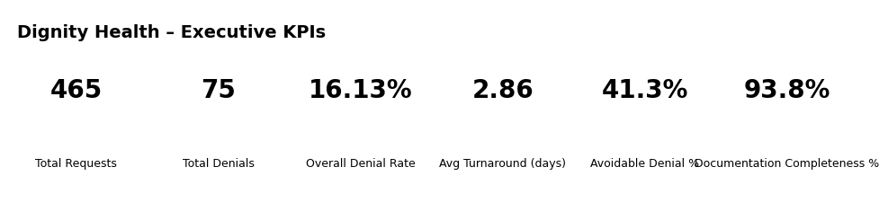

Dignity Health – Analytics Portfolio (Revenue Integrity)
This page highlights KPIs and visuals aligned to Dignity Health priorities: revenue integrity, compliance analytics, and denial prevention.
Executive KPI Cards

KPIs Featured
- Avoidable Denial %: Portion of denials linked to preventable causes (missing docs, late submissions, incorrect order linkage).
- Documentation Completeness %: Measures documentation readiness at time of submission to support medical necessity and payer rules.
How I’d Use This in a Role
- Segment avoidable denials by payer, service line, and reason to prioritize interventions.
- Support compliance/audit initiatives through documentation completeness monitoring.
- Recommend targeted training and workflow updates to reduce revenue leakage.
Back to main portfolio